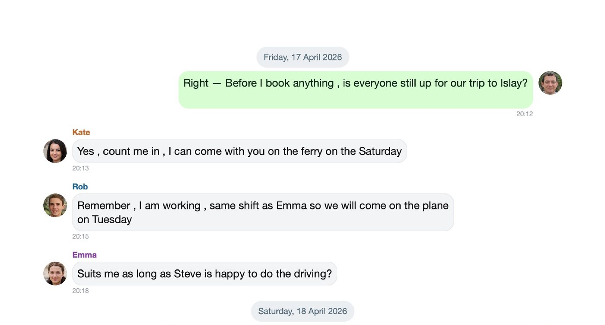
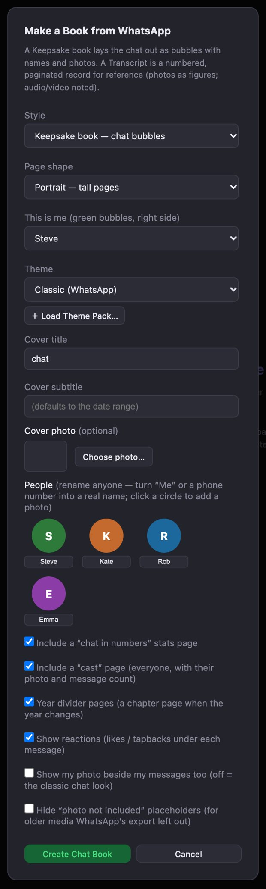
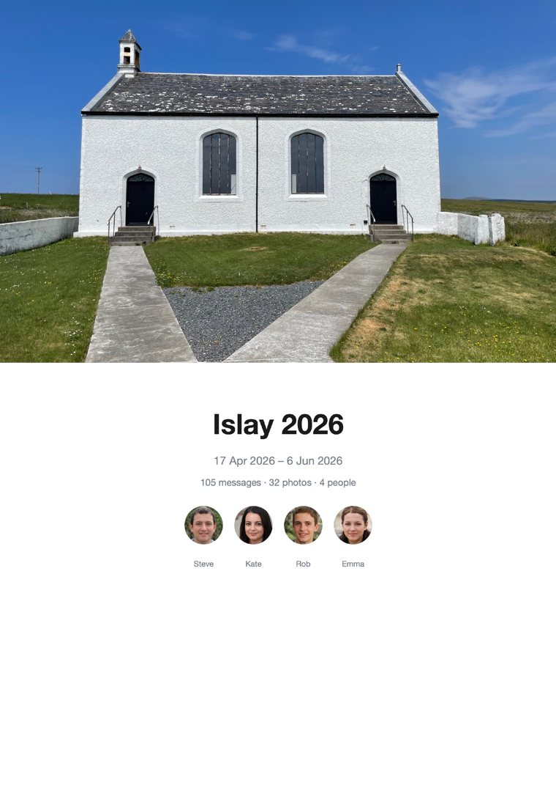
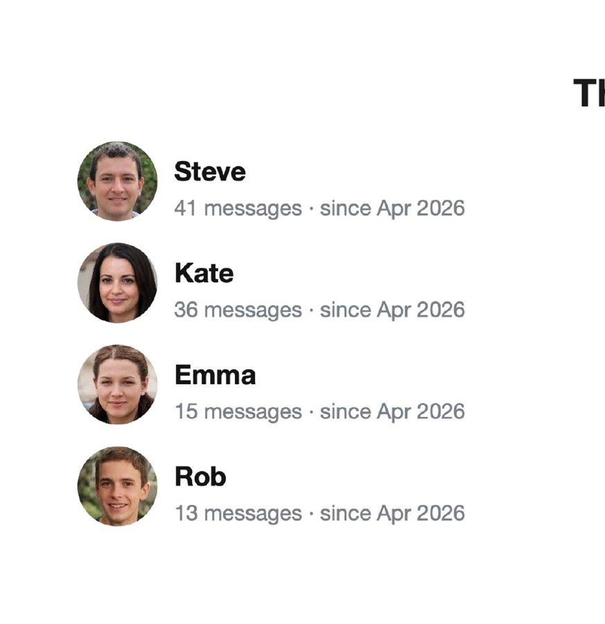
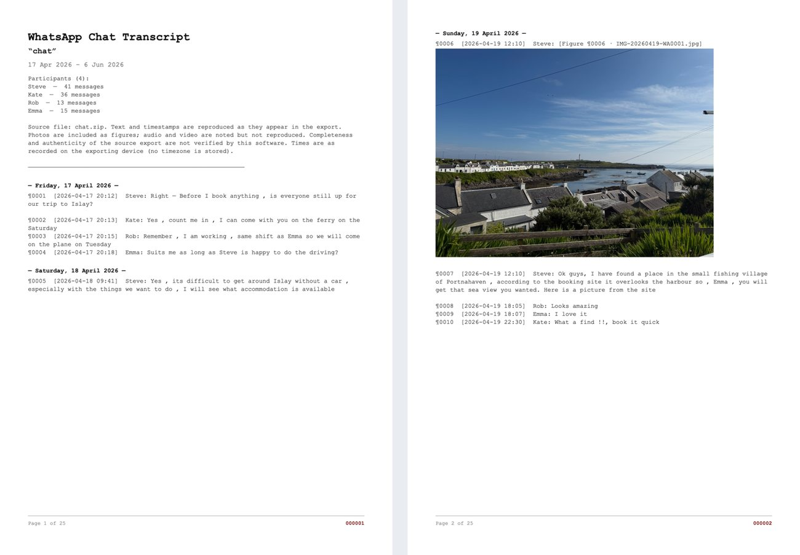

Turn a WhatsApp or iMessage chat into a printed book
The family group chat, the trip everyone still talks about, the conversation you never want to lose — as a book you own. Built on your own computer; nothing is uploaded.

Two kinds of book
Keepsake book
The chat laid out as it looks on your phone: rounded bubbles, names, date headers and your photos inline, with a designed cover, a cast page and an optional “chat in numbers” page. Long chats can be split into one book per year. This is the one for a gift or a memento.
Numbered transcript
A clean, formal, paginated record of the whole conversation, every message numbered, with photos and PDFs shown as figures. Use it when you need the chat as a tidy document.
What you need
- Mosaic Collage Maker on a Mac or Windows PC.
- An export of the chat — from WhatsApp itself, or from iMazing (for iMessage, or for a complete WhatsApp export). Step 1 below shows how.
- Ten to twenty minutes for a first book. Most of that is choosing how it should look.
Step by step
Export the chat
From WhatsApp: on your phone open the chat. On an iPhone tap the contact or group name at the top, scroll down and tap Export Chat. On Android tap the ⋮ menu, then More, then Export chat. Choose Attach Media so your photos come too, then send the file to your computer (AirDrop, email, or save to Files). You get a
.zipor a_chat.txt— either works.From iMazing (for iMessage, and for the whole of a long WhatsApp chat): open the conversation in iMazing and export it as Text. It saves a
.txtfile and a folder of the chat's photos beside it — keep them together.Which should I use? WhatsApp's own export is quick and free, but it only includes roughly the most recent few hundred photos and videos, so in a chat that goes back years the older pictures are left out. iMazing reads the chat and its media from your device's backup, so it can give you the whole conversation with all its photos — and it is the only practical way to export iMessage.
Click “Chat Book…”
In Mosaic Collage Maker click the 💬 Chat Book… button in the toolbar and choose the file you saved (the WhatsApp
.zipor_chat.txt, or the iMazing.txt). For an iMazing export the app then asks you to pick the folder of attachments it saved next to the text file, and matches every photo to its message automatically.Choose how the book should look

The Make a Book window A window opens with the options for the book:
- Style — Keepsake book (chat bubbles) or Transcript (numbered record).
- Page shape — portrait, landscape or square, to match the photobook size you will order.
- This is me — which person you are, so your messages are the green bubbles on the right.
- Theme — the colour look of the whole book. You can change it later, and Load Theme Pack… adds more.
- Cover title, subtitle and photo — the subtitle defaults to the chat's date range; choose a hero photo for the front.
- People — click a person's circle to give them a photo, which then appears beside their messages. You can also rename anyone here, for example turn a phone number into a real name. Anyone without a photo gets a coloured circle with their initial.
- Optional pages — a “chat in numbers” stats page, a cast page, year divider pages, reactions under messages, and whether to hide “photo not included” placeholders.
If the chat spans several years you can also build one book per year — a lovely matching set.
Press “Create Chat Book”
The pages are built on screen in a moment. Every page is an ordinary page in the app, so you can move photos, edit text, or change the theme (the Restyle button swaps the whole book's look in one step without touching your edits).
Export and print
Export the whole book as a single print-ready PDF (or as JPEGs) and take it to any printer or photobook service. You own the file, so you can reprint or restyle it whenever you like. If you are unsure of the page size your printer wants, see Page Setup in the help guide.
What it looks like



Tips and fixes
- A phone number instead of a name. Type the real name into that person's box in the Make a Book window. If the same person appears twice — once as a number, once under their saved name — give both exactly the same name and they merge, with their messages and counts combined.
- @mentions showing a number. In some newer WhatsApp group chats the export only has a numeric ID in an @mention. The app lists these under Name these @mentions so you can name each one.
- Missing photos. This is nearly always WhatsApp's limit on how much media it exports, not something the app can undo. Use iMazing for the complete set. If the export has the names of the missing files, the app offers to find them in a copy of your WhatsApp media folder.
- iMessage photos on Windows. They are usually HEIC, which Windows cannot read. In iMazing turn on Convert HEIC to JPEG when exporting.
- A very long chat. Thousands of messages and photos are fine; the book is simply many pages. Splitting into one book per year keeps each one a manageable size.
Private by design
The export file is read on your own computer and the book is built there. There is no account, no upload and no tracking. Your conversation never leaves your machine. The privacy page has the details.
Common questions
Is my chat uploaded anywhere?
No. Mosaic Collage Maker reads the export file on your own computer and builds the book there. There is no account and nothing is sent to a server.
Can I make a book from iMessage?
Yes. Apple's Messages app has no export, so export the conversation with iMazing (as Text, keeping the photos folder beside the text file) and import that file with the Chat Book button.
Why are some photos missing from my WhatsApp book?
WhatsApp's own export only includes roughly the most recent few hundred photos and videos, so older ones are left out. iMazing's export includes the whole conversation with all its photos. Where a photo is missing, the book can show a 'photo not included' marker, which you can hide.
Why do some people show as phone numbers?
The export only has the name your phone knew. Type the right name into the person's box in the Make a Book window; if the same person appears twice, give both exactly the same name and they merge.
What is the difference between a keepsake book and a transcript?
A keepsake book looks like the chat on your phone, with bubbles, names, photos and a designed cover. A transcript is a formal numbered record of every message, with photos and PDFs shown as figures, suited to keeping a record.
Do my iMessage photos work on Windows?
iMessage photos are usually in Apple's HEIC format, which the Windows version cannot read. In iMazing, turn on 'Convert HEIC to JPEG' when exporting and they import as normal photos. On a Mac they work as they are.